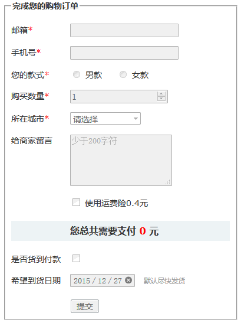
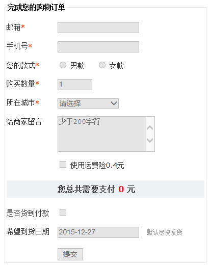

原文连接:https://www.cnblogs.com/yuanqt/p/11097937.html
转载地址：https://www.zhangxinxu.com/wordpress/?p=8568
一、pointer-events:none和覆盖层方法的问题
经常会遇到需求，需要禁用div中或者form元素中一堆表单控件元素，如<input>，<select>，<textarea>元素。
很多人用的下面这两种方法实现：
- 设置
pointer-events:none，该声明不了解可参见“CSS3 pointer-events:none应用举例及扩展”这篇文章。例如：form { pointer-events: none; } - 使用
::before伪元素创建一个浮层该在所有的表单元素上，例如：form { position: relative; } form::before { content: ''; position: absolute; left: 0; right: 0; top: 0; bottom: 0; background-color: rgba(0,0,0,.001); }
以上两个方向虽然可以让点击无效，但是并没有阻止键盘访问，也就是Tab键索引，或者回车都能触发表单行为，使用new FormData(form)也能获取表单控件值，并不是真正意义上禁用，问题很大。
那有没有什么简单方法轻松禁用所有表单元素呢？难道真要遍历所有的控件元素再设置[disabled]属性吗？
有！
二、fieldset元素轻松实现
其实，要真正意义上禁用所有的表单元素很简单，嵌套在<fieldset>元素中，然后设置<fieldset>元素disabled就可以了，代码示意如下：
<form>
<fieldset disabled>
<legend>表单标题</legend>
<...>
</fieldset>
</form>回家吧，结束了！
Let’s go home! It’s over!
下图是Chrome浏览器下的效果：

Firefox浏览器下：

Edge浏览器下：

三、IE浏览器的瑕疵和解决
然后，IE浏览器（包括Edge）下有个瑕疵，那就是UI样式上虽然禁用了，键盘也无法响应，但是，输入框内容居然可以输入，而且表单的提交行为居然也可以点击触发，有些不完美，怎么办呢？
可以再辅助下面的CSS：
fieldset[disabled] {
-ms-pointer-events: none;
pointer-events: none;
}IE10+浏览器都可以完美禁用。
有人要问如果我要兼容IE8，IE9浏览器怎么办？
那使用伪元素创建一个浮层覆盖在所有表单元素上面，就是一开始提到的覆盖方法，具体代码不重复展示。
于是，双管齐下，表单所有元素禁用就这样完美搞定了。
您可以狠狠地点击这里：一次性禁用所有的表单元素demo
四、结束语
第五届CSS大会上的演讲内容将会分系列和一个汇总依次介绍，等不及的小伙伴可以访问这里我的分享视频。
我手上目前还有其他活，预计清明节后陆续更新，稍安……
最后，关于fieldset元素，推荐阅读我之前写的这篇文章：“fieldset,legend元素及CSS布局应用”，相信会有所收获的。
好的，就说这么多！
感谢阅读，欢迎交流，也欢迎朋友圈分享。